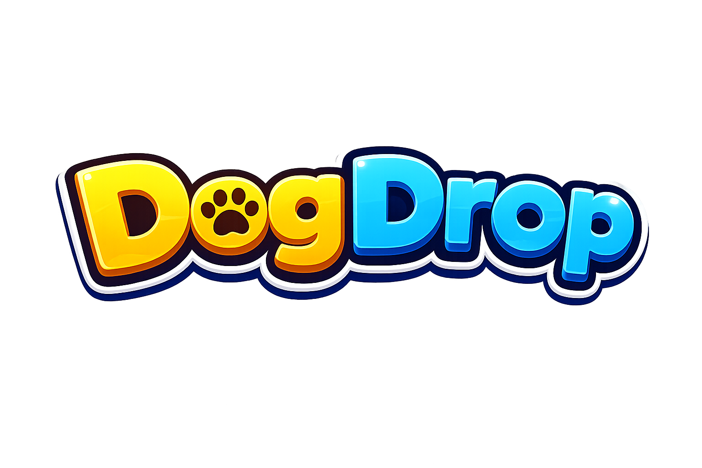
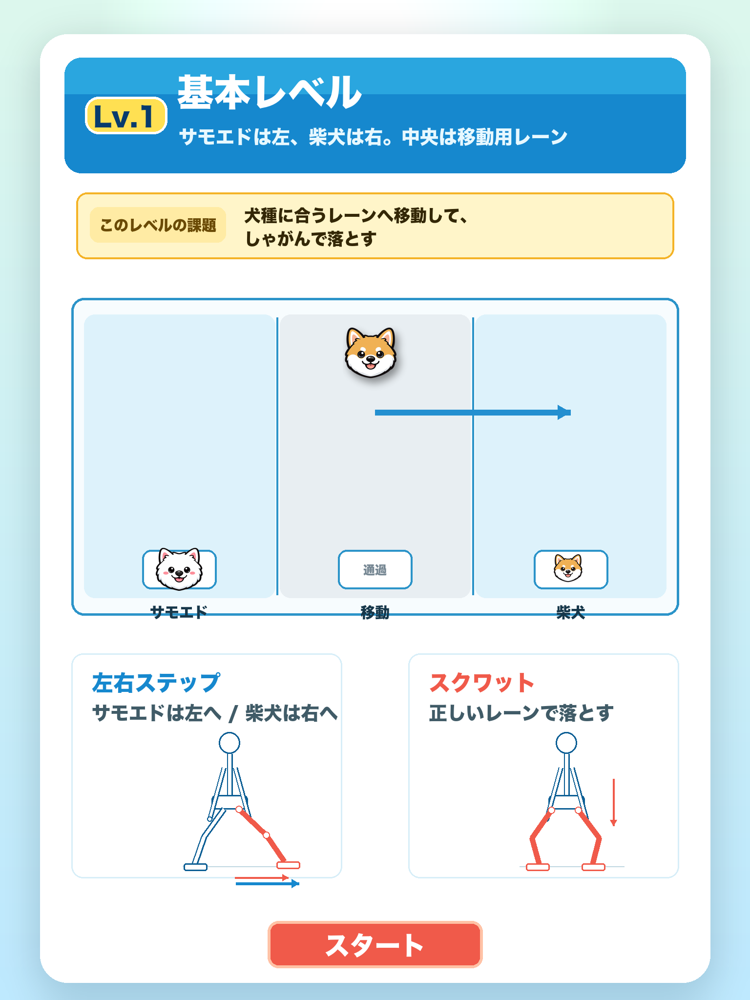

MOVE, PLAY, MATCH!
体を動かして、
犬と遊ぼう。
DogDropは、iPhoneまたはiPadの前面カメラで体の動きを読み取りながら遊ぶ、犬が主役の運動ゲームです。
カメラ映像や骨格座標は保存・送信しません。

1分から、気軽に運動DOGDROPについて
ステップとスクワット。
毎日の動きがゲームになる。
左右ステップで犬を動かし、スクワットを使って落ちてくる犬をそろえます。短い時間でも、遊びながら自然に体を動かせるように設計しました。
HOW TO PLAY
遊び方は、かんたん。
- 01
カメラを許可
iPhoneまたはiPadを安定した場所に置き、前面カメラに全身が映る位置へ移動します。
- 02
ステージを選ぶ
まずはLevel 1から。プレイ時間は1分から選べます。
- 03
体を動かして遊ぶ
左右ステップとスクワットで犬を操作します。
SCREEN GUIDE
犬たちと、動き出そう。
掲載画像はアプリの画面イメージです。App Store用のスクリーンショットは、公開ビルドから別途用意します。


PLAY SAFELY
対応機種と安全な遊び方
対応機種
iOS／iPadOS 17以降を搭載し、前面カメラで全身を映せるiPhoneとiPadに対応します。対応状況はApp Storeの配信情報をご確認ください。
iPadをおすすめします
全身を映すため、端末から約1.5〜2m離れてプレイします。iPhoneでは画面が小さく見えやすいため、画面を見やすく確認できるiPadでのプレイをおすすめします。
iPhoneで遊ぶ場合
iPhoneでプレイする場合は、画面ミラーリングなどで外部モニターへ接続し、大きな画面に表示する環境をおすすめします。
安全のために
周囲に十分なスペースを確保し、無理のない範囲でお楽しみください。DogDropは医療、診断、治療、リハビリテーションを目的とするアプリではありません。